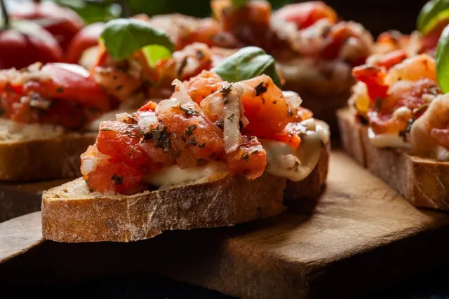

🍽️ Sonhado Sabor
Livro de Receitas Gourmet
Bruschetta Clássica
Pão italiano tostado com tomate, manjericão e azeite

⏱ Tempo: 15 minutos
⭐ Dificuldade: Fácil
👨🍳 Ingredientes
- 1 baguete italiana
- 4 tomates maduros
- 2 dentes de alho
- Folhas de manjericão fresco
- 4 colheres de sopa de azeite
- Sal e pimenta a gosto
🍳 Modo de Preparo
- Corte a baguete em fatias.
- Toste as fatias no forno.
- Esfregue alho nas fatias.
- Misture tomates, manjericão e azeite.
- Coloque a mistura sobre o pão e sirva.
💡 Dicas
Para uma bruschetta ainda mais saborosa, deixe a mistura de tomate descansar por 30 minutos antes de servir, permitindo que os sabores se integrem. Você também pode adicionar queijo parmesão ralado por cima.
Carpaccio Premium
Finas fatias de filé mignon com alcaparras e parmesão

⏱ Tempo: 20 minutos + 1h refrigeração
⭐ Dificuldade: Médio
👨🍳 Ingredientes
- 400g de filé mignon
- 2 colheres de alcaparras
- 50g de parmesão em lascas
- 4 colheres de azeite
- Suco de 1 limão
- Rúcula
- Sal e pimenta
🍳 Modo de Preparo
- Leve o filé ao congelador 1 hora.
- Corte em fatias finas.
- Coloque em pratos e tempere com azeite, limão, sal e pimenta.
- Adicione alcaparras, parmesão e rúcula.
💡 Dicas
O segredo para um bom carpaccio está no corte fino da carne. Se preferir, peça ao açougueiro para fatiar a carne para você. Para uma versão mais sofisticada, adicione um fio de azeite trufado por cima.